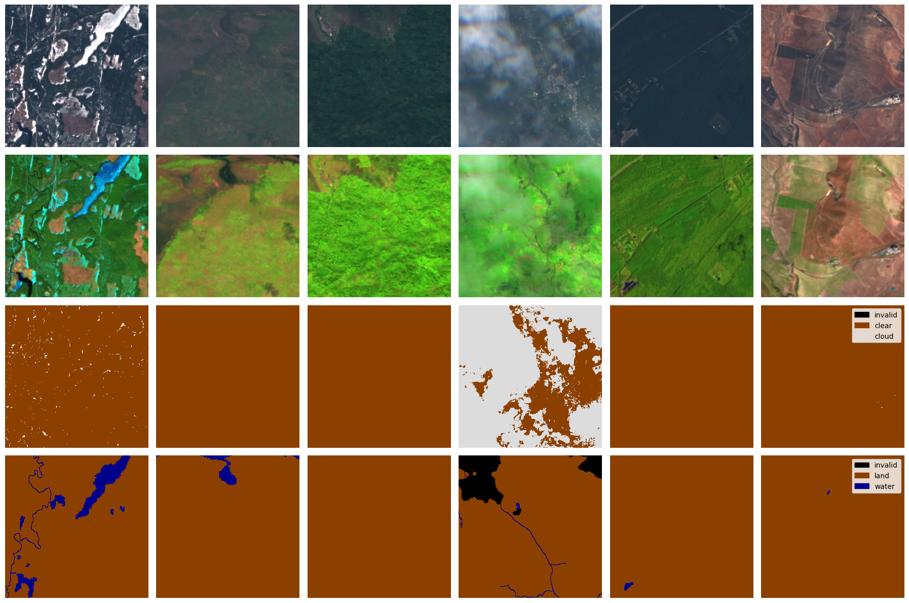

WorldFloodsV2 torch Dataset#
Last Modified: 31-07-2025
Authors: Gonzalo Mateo-García (from Ruben Cartuyvels feedback)
E. Portalés-Julià, G. Mateo-García, C. Purcell, and L. Gómez-Chova Global flood extent segmentation in optical satellite images. Scientific Reports 13, 20316 (2023). DOI: 10.1038/s41598-023-47595-7.
This example shows how to load the WorldFloodsv2 dataset with a pytorch Dataset for training or inference purposes.
Step 1: Download the v2 data from Hugging-Face 🤗#
The WorldFloods v2 dataset is stored in Hugging-Face in the repository: isp-uv-es/WorldFloodsv2.
To download the full dataset (~76GB) run:
huggingface-cli download --cache-dir /path/to/cachedir --local-dir /path/to/localdir/WorldFloodsv2 --repo-type dataset isp-uv-es/WorldFloodsv2
Step 2: Load the data with the Dataset on ml4floods#
from ml4floods.models.config_setup import get_default_config
from ml4floods.models.dataset_setup import get_dataset
from typing import Any, Dict
import pandas as pd
import json
import os
import ml4floods
# Change accordingly!
DATASET_PATH = "/path/to/localdir/WorldFloodsv2"
CONFIG_PATH = os.path.join(os.path.dirname(ml4floods.__file__),"models/configurations/worldfloods_template_v2.json")
# Set this to the path of the metadata CSV from huggingface
CSV_PATH = os.path.join(DATASET_PATH,"dataset_metadata.csv")
# Point this to the root of the dataset on the mounted bucket
JSON_PATH = os.path.join(DATASET_PATH, "train_test_split_from_csv.json")
def convert_metadata_csv_to_json() -> None:
out: Dict[str, Any] = {}
modalities = ["S2", "gt"]
csv = pd.read_csv(CSV_PATH)
for split in csv.split.unique():
out[split] = {}
files = csv[csv.split == split]["event id"]
for mod in modalities:
out[split][mod] = [
os.path.join(DATASET_PATH, split, mod, f"{fn}.tif")
for fn in files.to_list()
]
with open(JSON_PATH, "w") as f:
json.dump(out, f, indent=2)
convert_metadata_csv_to_json()
config = get_default_config(CONFIG_PATH)
config.data_params.loader_type = "local"
config.data_params.bucket_id = None
config.data_params.path_to_splits = DATASET_PATH
config.data_params["download"] = {
"train": False,
"val": False,
"test": False,
}
config.data_params.train_test_split_file = JSON_PATH
dm = get_dataset(config.data_params)
dm.prepare_data()
train_dl = dm.train_dataloader()
for batch in train_dl:
print(batch)
break
/home/gonzalo/miniforge3/envs/ml4floods2/lib/python3.12/site-packages/tqdm/auto.py:21: TqdmWarning: IProgress not found. Please update jupyter and ipywidgets. See https://ipywidgets.readthedocs.io/en/stable/user_install.html
from .autonotebook import tqdm as notebook_tqdm
Filtering invalid and cloudy windows: 100%|█████████████████████████████████████████████████████████████████████████████████████████| 135565/135565 [12:25<00:00, 181.82it/s]
train 65582 tiles
val 3524 tiles
test 18 tiles
/home/gonzalo/miniforge3/envs/ml4floods2/lib/python3.12/site-packages/torch/utils/data/dataloader.py:626: UserWarning: This DataLoader will create 4 worker processes in total. Our suggested max number of worker in current system is 1, which is smaller than what this DataLoader is going to create. Please be aware that excessive worker creation might get DataLoader running slow or even freeze, lower the worker number to avoid potential slowness/freeze if necessary.
warnings.warn(
{'image': tensor([[[[-0.9156, -0.9156, -0.9156, ..., -0.8165, -0.8165, -0.8165],
[-0.9156, -0.9156, -0.9156, ..., -0.8165, -0.8165, -0.8165],
[-0.9156, -0.9156, -0.9156, ..., -0.8165, -0.8165, -0.8165],
...,
[-0.7277, -0.7277, -0.7277, ..., -0.8260, -0.8260, -0.8260],
[-0.7277, -0.7277, -0.7277, ..., -0.8260, -0.8260, -0.8260],
[-0.7277, -0.7277, -0.7277, ..., -0.8260, -0.8260, -0.8260]],
[[-1.0011, -1.0111, -1.0050, ..., -0.8980, -0.8772, -0.9345],
[-0.9506, -1.0100, -1.0054, ..., -0.8898, -0.8486, -0.9255],
[-0.9685, -1.0050, -0.9939, ..., -0.8669, -0.7810, -0.8611],
...,
[-0.7298, -0.5945, -0.4911, ..., -0.7391, -0.7641, -0.8078],
[-0.4778, -0.7505, -0.8142, ..., -0.7072, -0.7845, -0.9216],
[-0.4610, -0.8397, -0.7734, ..., -0.7205, -0.6679, -0.8300]],
[[-0.9783, -0.9998, -0.9987, ..., -0.8755, -0.8092, -0.9108],
[-0.9343, -0.9763, -0.9814, ..., -0.8747, -0.8049, -0.8763],
[-0.9312, -0.9818, -0.9720, ..., -0.8002, -0.7606, -0.8335],
...,
[-0.6511, -0.5150, -0.4374, ..., -0.7061, -0.6845, -0.6798],
[-0.3762, -0.7261, -0.7676, ..., -0.6256, -0.7061, -0.8473],
[-0.4095, -0.8080, -0.7316, ..., -0.6378, -0.5723, -0.8022]],
...,
[[-0.5036, -0.5036, -0.5036, ..., -0.5062, -0.5062, -0.5062],
[-0.5036, -0.5036, -0.5036, ..., -0.5062, -0.5062, -0.5062],
[-0.5036, -0.5036, -0.5036, ..., -0.5062, -0.5062, -0.5062],
...,
[-0.5036, -0.5036, -0.5036, ..., -0.5036, -0.5036, -0.5036],
[-0.5036, -0.5036, -0.5036, ..., -0.5036, -0.5036, -0.5036],
[-0.5036, -0.5036, -0.5036, ..., -0.5036, -0.5036, -0.5036]],
[[-1.1538, -1.1538, -1.1824, ..., -1.2024, -1.1998, -1.1998],
[-1.1538, -1.1538, -1.1824, ..., -1.2024, -1.1998, -1.1998],
[-1.1511, -1.1511, -1.1698, ..., -1.2111, -1.2091, -1.2091],
...,
[-0.7758, -0.7758, -1.0891, ..., -0.2211, -0.5284, -0.5284],
[-0.7778, -0.7778, -0.9991, ..., -0.7984, -0.9818, -0.9818],
[-0.7778, -0.7778, -0.9991, ..., -0.7984, -0.9818, -0.9818]],
[[-1.1959, -1.1959, -1.2145, ..., -1.2016, -1.2040, -1.2040],
[-1.1959, -1.1959, -1.2145, ..., -1.2016, -1.2040, -1.2040],
[-1.1726, -1.1726, -1.1992, ..., -1.2185, -1.2153, -1.2153],
...,
[-0.8368, -0.8368, -1.0945, ..., -0.2958, -0.6235, -0.6235],
[-0.7837, -0.7837, -1.0011, ..., -0.8553, -1.0486, -1.0486],
[-0.7837, -0.7837, -1.0011, ..., -0.8553, -1.0486, -1.0486]]],
[[[-0.9460, -0.9460, -0.9460, ..., -0.9334, -0.9334, -0.9334],
[-0.9460, -0.9460, -0.9460, ..., -0.9334, -0.9334, -0.9334],
[-0.9460, -0.9460, -0.9460, ..., -0.9334, -0.9334, -0.9334],
...,
[-0.9535, -0.9535, -0.9535, ..., -0.9577, -0.9577, -0.9577],
[-0.9535, -0.9535, -0.9535, ..., -0.9577, -0.9577, -0.9577],
[-0.9535, -0.9535, -0.9535, ..., -0.9577, -0.9577, -0.9577]],
[[-0.9678, -0.9681, -0.9692, ..., -0.9467, -0.9434, -0.9406],
[-0.9685, -0.9671, -0.9696, ..., -0.9449, -0.9431, -0.9488],
[-0.9667, -0.9703, -0.9696, ..., -0.9481, -0.9485, -0.9524],
...,
[-0.9617, -0.9588, -0.9653, ..., -0.9667, -0.9703, -0.9724],
[-0.9570, -0.9588, -0.9674, ..., -0.9728, -0.9717, -0.9757],
[-0.9610, -0.9542, -0.9531, ..., -0.9746, -0.9685, -0.9728]],
[[-0.8857, -0.8826, -0.8877, ..., -0.8445, -0.8441, -0.8453],
[-0.8877, -0.8810, -0.8912, ..., -0.8445, -0.8457, -0.8457],
[-0.8877, -0.8908, -0.8951, ..., -0.8512, -0.8504, -0.8512],
...,
[-0.8378, -0.8382, -0.8406, ..., -0.8488, -0.8480, -0.8531],
[-0.8394, -0.8500, -0.8465, ..., -0.8547, -0.8559, -0.8551],
[-0.8288, -0.8288, -0.8359, ..., -0.8563, -0.8645, -0.8606]],
...,
[[-0.5141, -0.5141, -0.5141, ..., -0.5141, -0.5141, -0.5141],
[-0.5141, -0.5141, -0.5141, ..., -0.5141, -0.5141, -0.5141],
[-0.5141, -0.5141, -0.5141, ..., -0.5141, -0.5141, -0.5141],
...,
[-0.5114, -0.5114, -0.5114, ..., -0.5101, -0.5101, -0.5101],
[-0.5114, -0.5114, -0.5114, ..., -0.5101, -0.5101, -0.5101],
[-0.5114, -0.5114, -0.5114, ..., -0.5101, -0.5101, -0.5101]],
[[-1.2671, -1.2671, -1.1971, ..., -1.3431, -1.3518, -1.3518],
[-1.2164, -1.2164, -0.9858, ..., -1.3044, -1.3251, -1.3251],
[-1.2164, -1.2164, -0.9858, ..., -1.3044, -1.3251, -1.3251],
...,
[ 0.0362, 0.0362, 0.0762, ..., 0.0642, 0.0056, 0.0056],
[ 0.0362, 0.0362, 0.0762, ..., 0.0642, 0.0056, 0.0056],
[ 0.0289, 0.0289, 0.0616, ..., -0.0631, -0.0478, -0.0478]],
[[-1.1855, -1.1855, -1.1323, ..., -1.2611, -1.2781, -1.2781],
[-1.1605, -1.1605, -0.9954, ..., -1.2563, -1.2716, -1.2716],
[-1.1605, -1.1605, -0.9954, ..., -1.2563, -1.2716, -1.2716],
...,
[-0.2523, -0.2523, -0.2088, ..., -0.3296, -0.3634, -0.3634],
[-0.2523, -0.2523, -0.2088, ..., -0.3296, -0.3634, -0.3634],
[-0.2394, -0.2394, -0.2209, ..., -0.4391, -0.4141, -0.4141]]],
[[[-0.9892, -0.9892, -0.9892, ..., -1.0222, -1.0222, -1.0222],
[-0.9892, -0.9892, -0.9892, ..., -1.0222, -1.0222, -1.0222],
[-0.9835, -0.9835, -0.9835, ..., -1.0340, -1.0340, -1.0340],
...,
[-1.0363, -1.0363, -1.0363, ..., -1.0390, -1.0390, -1.0390],
[-1.0420, -1.0420, -1.0420, ..., -1.0363, -1.0363, -1.0363],
[-1.0420, -1.0420, -1.0420, ..., -1.0363, -1.0363, -1.0363]],
[[-0.9918, -0.9871, -0.9950, ..., -1.0537, -1.0522, -1.0522],
[-0.9939, -0.9893, -0.9918, ..., -1.0641, -1.0540, -1.0465],
[-1.0039, -0.9943, -0.9821, ..., -1.0540, -1.0548, -1.0666],
...,
[-1.0651, -1.0673, -1.0655, ..., -1.0712, -1.0726, -1.0845],
[-1.0666, -1.0648, -1.0580, ..., -1.0594, -1.0616, -1.0784],
[-1.0691, -1.0673, -1.0641, ..., -1.0394, -1.0340, -1.0580]],
[[-0.9077, -0.8951, -0.8939, ..., -0.9524, -0.9449, -0.9316],
[-0.9049, -0.9002, -0.8955, ..., -0.9743, -0.9645, -0.9434],
[-0.9135, -0.9143, -0.8928, ..., -0.9343, -0.9504, -0.9802],
...,
[-0.9720, -0.9579, -0.9653, ..., -0.9724, -0.9873, -1.0112],
[-0.9653, -0.9634, -0.9532, ..., -0.9743, -0.9747, -0.9963],
[-0.9853, -0.9661, -0.9488, ..., -0.9426, -0.9367, -0.9673]],
...,
[[-0.5114, -0.5114, -0.5114, ..., -0.5114, -0.5114, -0.5114],
[-0.5114, -0.5114, -0.5114, ..., -0.5114, -0.5114, -0.5114],
[-0.5114, -0.5114, -0.5114, ..., -0.5141, -0.5141, -0.5141],
...,
[-0.5127, -0.5127, -0.5127, ..., -0.5141, -0.5141, -0.5141],
[-0.5127, -0.5127, -0.5127, ..., -0.5141, -0.5141, -0.5141],
[-0.5127, -0.5127, -0.5127, ..., -0.5141, -0.5141, -0.5141]],
[[-0.1444, -0.1444, 0.1049, ..., -0.4258, -0.3624, -0.3624],
[-0.1444, -0.1444, 0.1049, ..., -0.4258, -0.3624, -0.3624],
[-0.3691, -0.3691, -0.1078, ..., -0.4278, -0.4671, -0.4671],
...,
[-0.5858, -0.5858, -0.5384, ..., -0.7258, -0.8058, -0.8058],
[-0.6324, -0.6324, -0.5864, ..., -0.4871, -0.5978, -0.5978],
[-0.6324, -0.6324, -0.5864, ..., -0.4871, -0.5978, -0.5978]],
[[-0.5574, -0.5574, -0.3843, ..., -0.9310, -0.8803, -0.8803],
[-0.5574, -0.5574, -0.3843, ..., -0.9310, -0.8803, -0.8803],
[-0.7265, -0.7265, -0.5301, ..., -0.9278, -0.9608, -0.9608],
...,
[-1.0099, -1.0099, -0.9898, ..., -1.0510, -1.0905, -1.0905],
[-1.0357, -1.0357, -1.0277, ..., -0.9045, -0.9318, -0.9318],
[-1.0357, -1.0357, -1.0277, ..., -0.9045, -0.9318, -0.9318]]],
...,
[[[-0.7941, -0.7941, -0.7941, ..., -0.7744, -0.7744, -0.7744],
[-0.7941, -0.7941, -0.7941, ..., -0.7744, -0.7744, -0.7744],
[-0.7941, -0.7941, -0.7941, ..., -0.7744, -0.7744, -0.7744],
...,
[-0.7421, -0.7421, -0.7421, ..., -0.7478, -0.7478, -0.7478],
[-0.7421, -0.7421, -0.7421, ..., -0.7478, -0.7478, -0.7478],
[-0.7421, -0.7421, -0.7421, ..., -0.7478, -0.7478, -0.7478]],
[[-0.8214, -0.8550, -0.8472, ..., -0.7513, -0.7606, -0.7394],
[-0.8132, -0.8425, -0.7878, ..., -0.7108, -0.7817, -0.7108],
[-0.7924, -0.7935, -0.7691, ..., -0.6822, -0.7727, -0.7133],
...,
[-0.6092, -0.6478, -0.6625, ..., -0.6729, -0.7112, -0.7588],
[-0.6009, -0.6292, -0.6528, ..., -0.6790, -0.6650, -0.6954],
[-0.6127, -0.6353, -0.6704, ..., -0.6815, -0.6725, -0.6811]],
[[-0.6409, -0.6939, -0.6888, ..., -0.5213, -0.5339, -0.5515],
[-0.6543, -0.7013, -0.6245, ..., -0.4535, -0.5464, -0.5041],
[-0.6256, -0.6186, -0.5919, ..., -0.4205, -0.5378, -0.4923],
...,
[-0.2946, -0.3495, -0.3891, ..., -0.3887, -0.4472, -0.5499],
[-0.2660, -0.3017, -0.3409, ..., -0.4138, -0.3687, -0.4542],
[-0.2750, -0.3272, -0.3660, ..., -0.4166, -0.3656, -0.3868]],
...,
[[-0.4904, -0.4904, -0.4904, ..., -0.4878, -0.4878, -0.4878],
[-0.4904, -0.4904, -0.4904, ..., -0.4878, -0.4878, -0.4878],
[-0.4904, -0.4904, -0.4904, ..., -0.4878, -0.4878, -0.4878],
...,
[-0.4891, -0.4891, -0.4891, ..., -0.4891, -0.4891, -0.4891],
[-0.4891, -0.4891, -0.4891, ..., -0.4891, -0.4891, -0.4891],
[-0.4891, -0.4891, -0.4891, ..., -0.4891, -0.4891, -0.4891]],
[[ 0.7435, 0.7435, 0.4496, ..., 1.2222, 1.2222, 0.9969],
[ 0.8469, 0.8469, 0.7802, ..., 1.3069, 1.3069, 1.0095],
[ 0.8469, 0.8469, 0.7802, ..., 1.3069, 1.3069, 1.0095],
...,
[ 1.5982, 1.5982, 1.4722, ..., 1.4255, 1.2529, 1.2529],
[ 1.5982, 1.5982, 1.4722, ..., 1.4842, 1.4462, 1.4462],
[ 1.7109, 1.7109, 1.6009, ..., 1.4842, 1.4462, 1.4462]],
[[ 0.5851, 0.5851, 0.3323, ..., 1.2526, 1.2526, 1.0368],
[ 0.7260, 0.7260, 0.6777, ..., 1.3572, 1.3572, 0.9925],
[ 0.7260, 0.7260, 0.6777, ..., 1.3572, 1.3572, 0.9925],
...,
[ 1.4877, 1.4877, 1.4603, ..., 1.5537, 1.2993, 1.2993],
[ 1.4877, 1.4877, 1.4603, ..., 1.6890, 1.5787, 1.5787],
[ 1.7461, 1.7461, 1.7566, ..., 1.6890, 1.5787, 1.5787]]],
[[[ 0.6316, 0.6316, 0.6316, ..., -0.4214, -0.4214, -0.3644],
[ 0.6316, 0.6316, 0.6316, ..., -0.4214, -0.4214, -0.3644],
[ 0.6316, 0.6316, 0.6316, ..., -0.4214, -0.4214, -0.3644],
...,
[-0.5174, -0.5174, -0.5174, ..., -0.1640, -0.1640, -0.5151],
[-0.5174, -0.5174, -0.5174, ..., -0.1640, -0.1640, -0.5151],
[-0.5174, -0.5174, -0.5174, ..., -0.1640, -0.1640, -0.5151]],
[[ 1.0236, 1.0422, 1.1606, ..., -0.6106, -0.7867, -0.6901],
[ 1.0966, 0.9198, 1.2820, ..., -0.7051, -0.7112, -0.5304],
[ 0.8085, 0.7129, 1.1152, ..., -0.7047, -0.6077, -0.5408],
...,
[-0.5651, -0.6743, -0.5945, ..., 0.1682, -0.3518, -0.4463],
[-0.4277, -0.3951, -0.5619, ..., -0.0093, -0.2613, -0.5573],
[-0.4395, -0.3336, -0.3257, ..., -0.1332, -0.1826, -0.4703]],
[[ 1.2261, 1.3771, 1.3320, ..., -0.5845, -0.7402, -0.6986],
[ 1.1484, 1.3559, 1.5183, ..., -0.6802, -0.6633, -0.5578],
[ 1.0013, 0.9629, 1.3194, ..., -0.7143, -0.5676, -0.4362],
...,
[-0.4668, -0.5452, -0.5668, ..., 0.3149, -0.2938, -0.3974],
[-0.2358, -0.2518, -0.4891, ..., 0.0612, -0.1491, -0.4970],
[-0.3346, -0.2169, -0.2177, ..., 0.0306, -0.1546, -0.4252]],
...,
[[-0.4274, -0.4274, -0.4274, ..., -0.4904, -0.4904, -0.4930],
[-0.4274, -0.4274, -0.4274, ..., -0.4904, -0.4904, -0.4930],
[-0.4274, -0.4274, -0.4274, ..., -0.4904, -0.4904, -0.4930],
...,
[-0.4852, -0.4852, -0.4852, ..., -0.4878, -0.4878, -0.4878],
[-0.4852, -0.4852, -0.4852, ..., -0.4878, -0.4878, -0.4878],
[-0.4852, -0.4852, -0.4852, ..., -0.4878, -0.4878, -0.4878]],
[[-1.2204, -1.0744, -1.0744, ..., -1.3691, -1.3691, -1.3411],
[-1.2204, -1.0744, -1.0744, ..., -1.3691, -1.3691, -1.3411],
[-1.2131, -1.0064, -1.0064, ..., -1.3491, -1.3491, -1.3478],
...,
[-1.2291, -1.2311, -1.2311, ..., -1.3398, -1.3398, -1.3171],
[-1.2358, -1.2424, -1.2424, ..., -1.3591, -1.3591, -1.3044],
[-1.2358, -1.2424, -1.2424, ..., -1.3591, -1.3591, -1.3044]],
[[-1.0301, -0.8690, -0.8690, ..., -1.2901, -1.2901, -1.2571],
[-1.0301, -0.8690, -0.8690, ..., -1.2901, -1.2901, -1.2571],
[-1.0277, -0.8400, -0.8400, ..., -1.2708, -1.2708, -1.2603],
...,
[-1.2209, -1.2185, -1.2185, ..., -1.2402, -1.2402, -1.2161],
[-1.2249, -1.2104, -1.2104, ..., -1.2636, -1.2636, -1.2128],
[-1.2249, -1.2104, -1.2104, ..., -1.2636, -1.2636, -1.2128]]],
[[[-1.0279, -1.0298, -1.0298, ..., -1.0169, -1.0169, -1.0169],
[-1.0279, -1.0298, -1.0298, ..., -1.0169, -1.0169, -1.0169],
[-1.0238, -1.0245, -1.0245, ..., -1.0185, -1.0185, -1.0185],
...,
[-1.0162, -1.0143, -1.0143, ..., -1.0287, -1.0287, -1.0287],
[-1.0196, -1.0166, -1.0166, ..., -1.0283, -1.0283, -1.0283],
[-1.0196, -1.0166, -1.0166, ..., -1.0283, -1.0283, -1.0283]],
[[-1.0558, -1.0537, -1.0626, ..., -1.0358, -1.0372, -1.0286],
[-1.0655, -1.0551, -1.0583, ..., -1.0394, -1.0301, -1.0208],
[-1.0637, -1.0501, -1.0512, ..., -1.0365, -1.0240, -1.0301],
...,
[-1.0340, -1.0401, -1.0408, ..., -1.0530, -1.0544, -1.0487],
[-1.0386, -1.0426, -1.0490, ..., -1.0347, -1.0379, -1.0344],
[-1.0340, -1.0347, -1.0372, ..., -1.0397, -1.0476, -1.0490]],
[[-1.0163, -1.0175, -1.0187, ..., -0.9700, -0.9689, -0.9681],
[-1.0198, -1.0163, -1.0104, ..., -0.9834, -0.9779, -0.9708],
[-1.0124, -1.0018, -1.0038, ..., -0.9845, -0.9677, -0.9838],
...,
[-0.9673, -0.9685, -0.9767, ..., -0.9755, -0.9743, -0.9712],
[-0.9677, -0.9732, -0.9889, ..., -0.9536, -0.9590, -0.9445],
[-0.9700, -0.9708, -0.9669, ..., -0.9508, -0.9689, -0.9630]],
...,
[[-0.5114, -0.5101, -0.5101, ..., -0.5114, -0.5114, -0.5114],
[-0.5114, -0.5101, -0.5101, ..., -0.5114, -0.5114, -0.5114],
[-0.5127, -0.5114, -0.5114, ..., -0.5127, -0.5127, -0.5127],
...,
[-0.5114, -0.5141, -0.5141, ..., -0.5154, -0.5154, -0.5154],
[-0.5127, -0.5127, -0.5127, ..., -0.5154, -0.5154, -0.5154],
[-0.5127, -0.5127, -0.5127, ..., -0.5154, -0.5154, -0.5154]],
[[-0.5051, -0.4911, -0.4911, ..., -0.2184, -0.2184, -0.3244],
[-0.5051, -0.4911, -0.4911, ..., -0.2184, -0.2184, -0.3244],
[-0.4578, -0.4444, -0.4444, ..., -0.2271, -0.2271, -0.4011],
...,
[-0.1851, -0.1231, -0.1231, ..., -0.4071, -0.4071, -0.3764],
[-0.1944, -0.2631, -0.2631, ..., -0.3531, -0.3531, -0.3351],
[-0.1944, -0.2631, -0.2631, ..., -0.3531, -0.3531, -0.3351]],
[[-0.7434, -0.7563, -0.7563, ..., -0.4560, -0.4560, -0.5800],
[-0.7434, -0.7563, -0.7563, ..., -0.4560, -0.4560, -0.5800],
[-0.7249, -0.7233, -0.7233, ..., -0.4391, -0.4391, -0.6186],
...,
[-0.5647, -0.5341, -0.5341, ..., -0.7628, -0.7628, -0.7466],
[-0.5566, -0.6017, -0.6017, ..., -0.7346, -0.7346, -0.6959],
[-0.5566, -0.6017, -0.6017, ..., -0.7346, -0.7346, -0.6959]]]]), 'mask': tensor([[[[1, 1, 1, ..., 1, 1, 1],
[1, 1, 1, ..., 1, 1, 1],
[1, 1, 1, ..., 1, 1, 1],
...,
[1, 1, 1, ..., 1, 1, 1],
[1, 1, 1, ..., 1, 1, 1],
[1, 1, 1, ..., 1, 1, 1]],
[[1, 1, 1, ..., 1, 1, 1],
[1, 1, 1, ..., 1, 1, 1],
[1, 1, 1, ..., 1, 1, 1],
...,
[1, 1, 1, ..., 1, 1, 1],
[1, 1, 1, ..., 1, 1, 1],
[1, 1, 1, ..., 1, 1, 1]]],
[[[1, 1, 1, ..., 1, 1, 1],
[1, 1, 1, ..., 1, 1, 1],
[1, 1, 1, ..., 1, 1, 1],
...,
[1, 1, 1, ..., 1, 1, 1],
[1, 1, 1, ..., 1, 1, 1],
[1, 1, 1, ..., 1, 1, 1]],
[[2, 2, 2, ..., 2, 2, 2],
[2, 2, 2, ..., 2, 2, 2],
[2, 2, 2, ..., 2, 2, 2],
...,
[1, 1, 1, ..., 1, 1, 1],
[1, 1, 1, ..., 1, 1, 1],
[1, 1, 1, ..., 1, 1, 1]]],
[[[1, 1, 1, ..., 1, 1, 1],
[1, 1, 1, ..., 1, 1, 1],
[1, 1, 1, ..., 1, 1, 1],
...,
[1, 1, 1, ..., 1, 1, 1],
[1, 1, 1, ..., 1, 1, 1],
[1, 1, 1, ..., 1, 1, 1]],
[[1, 1, 1, ..., 1, 1, 1],
[1, 1, 1, ..., 1, 1, 1],
[1, 1, 1, ..., 1, 1, 1],
...,
[1, 1, 1, ..., 1, 1, 1],
[1, 1, 1, ..., 1, 1, 1],
[1, 1, 1, ..., 1, 1, 1]]],
...,
[[[1, 1, 1, ..., 1, 1, 1],
[1, 1, 1, ..., 1, 1, 1],
[1, 1, 1, ..., 1, 1, 1],
...,
[1, 1, 1, ..., 1, 1, 1],
[1, 1, 1, ..., 1, 1, 1],
[1, 1, 1, ..., 1, 1, 1]],
[[1, 1, 1, ..., 1, 1, 1],
[1, 1, 1, ..., 1, 1, 1],
[1, 1, 1, ..., 1, 1, 1],
...,
[1, 1, 1, ..., 1, 1, 1],
[1, 1, 1, ..., 1, 1, 1],
[1, 1, 1, ..., 1, 1, 1]]],
[[[1, 1, 1, ..., 1, 1, 1],
[1, 1, 1, ..., 1, 1, 1],
[1, 1, 1, ..., 1, 1, 1],
...,
[1, 1, 1, ..., 1, 1, 1],
[1, 1, 1, ..., 1, 1, 1],
[1, 1, 1, ..., 1, 1, 1]],
[[1, 1, 1, ..., 1, 1, 1],
[1, 1, 1, ..., 1, 1, 1],
[1, 1, 1, ..., 1, 1, 1],
...,
[1, 1, 1, ..., 1, 1, 1],
[1, 1, 1, ..., 1, 1, 1],
[1, 1, 1, ..., 1, 1, 1]]],
[[[1, 1, 1, ..., 1, 1, 1],
[1, 1, 1, ..., 1, 1, 1],
[1, 1, 1, ..., 1, 1, 1],
...,
[1, 1, 1, ..., 1, 1, 1],
[1, 1, 1, ..., 1, 1, 1],
[1, 1, 1, ..., 1, 1, 1]],
[[1, 1, 1, ..., 1, 1, 1],
[1, 1, 1, ..., 1, 1, 1],
[1, 1, 1, ..., 1, 1, 1],
...,
[1, 1, 1, ..., 1, 1, 1],
[1, 1, 1, ..., 1, 1, 1],
[1, 1, 1, ..., 1, 1, 1]]]])}
Step 3: Inspect the batch#
The batch is a dictionary with the S2 13 band image normalized and the mask.
The mask has 2 channels:
Cloud channel. With values 0 invalid, 1 clear and 2 cloud
Water channel. With values 0 invalid, 1 land and 2 water
print(batch.keys())
batch["image"].shape, batch["mask"].shape
dict_keys(['image', 'mask'])
(torch.Size([32, 13, 256, 256]), torch.Size([32, 2, 256, 256]))
Step 4: Plot the batch#
from ml4floods.models import worldfloods_model
import matplotlib.pyplot as plt
from ml4floods.data.worldfloods import configs
from ml4floods.visualization import plot_utils
n_images=6
fig, axs = plt.subplots(4,n_images, figsize=(18,12),tight_layout=True,sharex=True,sharey=True)
worldfloods_model.plot_batch(batch["image"][:n_images],axs=axs[0],max_clip_val=3500.)
worldfloods_model.plot_batch(batch["image"][:n_images],bands_show=["B11","B8", "B4"],
axs=axs[1],max_clip_val=4500.)
# worldfloods_model.plot_batch_output_v1(batch["mask"][:n_images, 0],axs=axs[2], show_axis=True)
cmap_preds_clouds, norm_preds_clouds, patches_preds_clouds = plot_utils.get_cmap_norm_colors(configs.COLORS_WORLDFLOODS_INVCLEARCLOUD,
["invalid","clear","cloud"])
for _i, (xi, ax) in enumerate(zip(batch["mask"][:n_images,0], axs[2])):
ax.imshow(xi, cmap=cmap_preds_clouds, norm=norm_preds_clouds,
interpolation='nearest')
ax.axis("off")
if _i == (len(batch["image"][:n_images,0])-1):
ax.legend(handles=patches_preds_clouds,
loc='upper right')
cmap_preds_water, norm_preds_water, patches_preds_water = plot_utils.get_cmap_norm_colors(configs.COLORS_WORLDFLOODS_INVLANDWATER,
["invalid","land","water"])
for _i, (xi, ax) in enumerate(zip(batch["mask"][:n_images,1], axs[3])):
ax.imshow(xi, cmap=cmap_preds_water, norm=norm_preds_water,
interpolation='nearest')
ax.axis("off")
if _i == (len(batch["mask"][:n_images,0])-1):
ax.legend(handles=patches_preds_water,
loc='upper right')

Licence#
The ML4Floods package is published under a GNU Lesser GPL v3 licence
The WorldFloods database and all pre-trained models are released under a Creative Commons non-commercial licence. For using the models in comercial pipelines written consent by the authors must be provided.
The Ml4Floods notebooks and docs are released under a Creative Commons non-commercial licence.
If you find this work useful please cite:
@article{portales-julia_global_2023,
title = {Global flood extent segmentation in optical satellite images},
volume = {13},
issn = {2045-2322},
doi = {10.1038/s41598-023-47595-7},
number = {1},
urldate = {2023-11-30},
journal = {Scientific Reports},
author = {Portalés-Julià, Enrique and Mateo-García, Gonzalo and Purcell, Cormac and Gómez-Chova, Luis},
month = nov,
year = {2023},
pages = {20316},
}
Acknowledgments#
This research has been supported by the DEEPCLOUD project (PID2019-109026RB-I00) funded by the Spanish Ministry of Science and Innovation (MCIN/AEI/10.13039/501100011033) and the European Union (NextGenerationEU).
 funded by MCIN/AEI/10.13039/501100011033.")